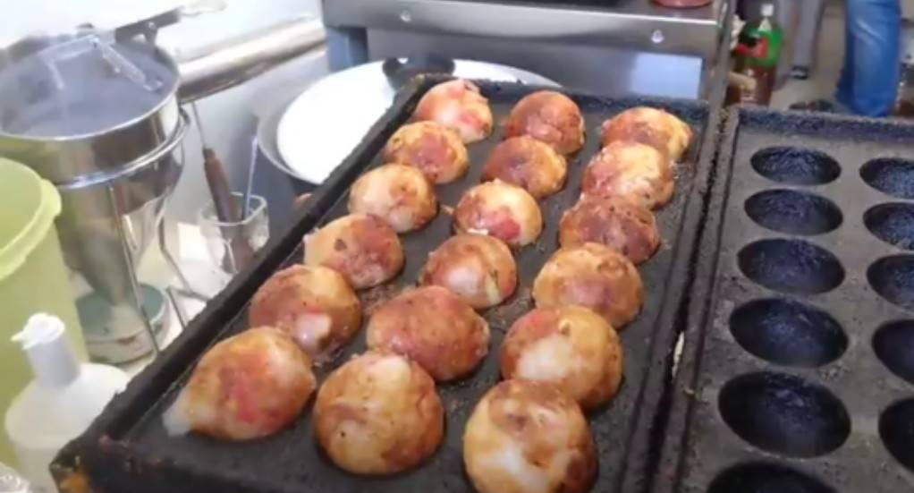
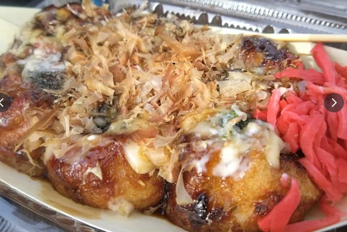
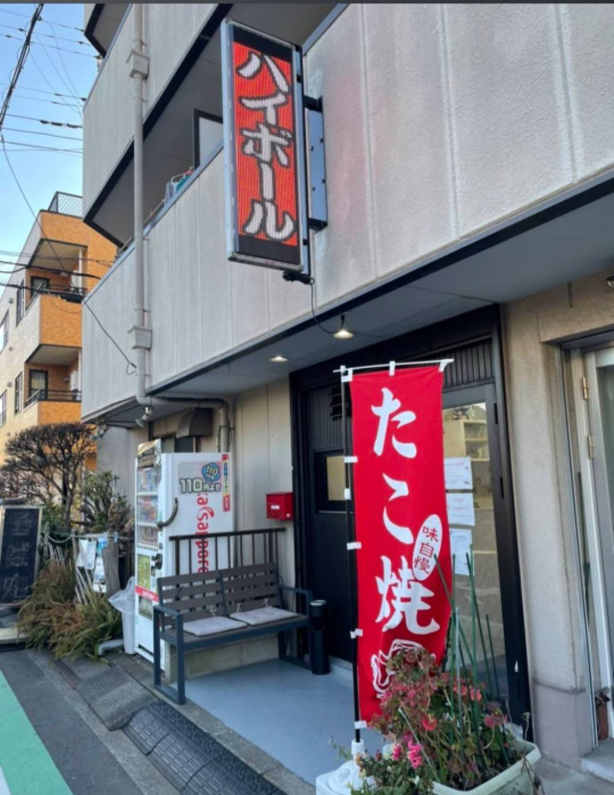

大ぶりたこ焼き
ぷりぷりの大きなタコが入った、えみ自慢の一舟。まずはここから。
北久里浜駅 徒歩15分
ぷりぷりで大きなタコが入った自慢のたこ焼き。肩ひじ張らずに座って、一舟囲めば自然と会話が弾む場所です。
Story
「最後はたこ焼き屋をやりたいな」という昔からの想いを形にして、おかげさまで五年が経ちました。
優しいママお手製の、ぷりぷりで大きなタコが入った大ぶりのたこ焼きは、一舟で大満足の美味しさです。一度食べたら止まらない自慢の味を囲んで、これからもみんなでわいわい楽しい時間を過ごせたら嬉しいです。

Takoyaki
外は香ばしく、中はとろり。大きめのタコを入れたたこ焼きは、昼の軽い一食にも、夜の一杯のおともにもぴったりです。
Space
席はカウンター3席と、4人用テーブル席が1卓。大きなお店ではありませんが、そのぶんママの声が届き、ひとりでも仲間同士でもゆっくり過ごせます。
Gallery


Information